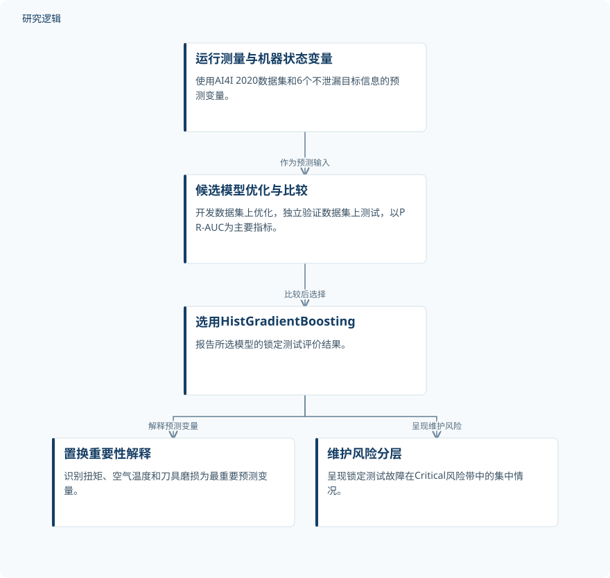

摘要解读
数字孪生驱动的智能制造预测性维护：融合机器学习实现智能机械系统优化
Digital Twin-Driven Predictive Maintenance in Smart Manufacturing: Integrating Machine Learning for Intelligent Mechanical System Optimization
解读更新 2026-11-10 10:52 · 依据公开摘要整理，未核验全文细节
设备故障风险如何转化为可解释的维护优先级？这项研究将运行测量构建为数字孪生维护的数据驱动虚拟状态层，阅读价值在于观察模型评估、变量解释与风险分级如何衔接，而非仅关注预测分数。
文章目录
从意外停机走向风险优先级
意外停机会影响生产效率、维护计划和资产利用。研究针对这一问题，提出以可解释机器学习辅助数字孪生维护决策。摘要中的数字孪生相关实现重点，是利用运行测量形成虚拟状态层，不宜据此推断已经完成实体设备与虚拟系统的实时闭环。
以无泄漏状态变量比较候选模型
研究使用AI4I 2020预测性维护数据集，以6个不泄漏目标信息的机器状态预测变量开展分析。候选模型包括逻辑回归、随机森林、极端随机树和HistGradientBoosting；模型在开发数据集上优化，并在独立验证数据集上测试，以精确率—召回率曲线下面积（PR-AUC）作为主要评价指标。
分析还使用置换重要性识别关键预测变量，并通过维护风险分层呈现结果。这使摘要所述流程不仅包含模型比较，也包含对预测依据和风险优先级的表达。
依据摘要整理的维护风险分析流程


仅概括摘要明确描述的数据分析、模型评价、解释与风险分层关系，不代表论文原图或现场部署架构。
下载 SVG图示关系说明
实线表示相邻阶段的信息流，虚线表示跨阶段联系或反馈。
运行测量与机器状态变量 → 候选模型优化与比较：作为预测输入；候选模型优化与比较 → 选用HistGradientBoosting：比较后选择；选用HistGradientBoosting → 置换重要性解释：解释预测变量；选用HistGradientBoosting → 维护风险分层：呈现维护风险
锁定测试表现与Critical风险带
最终选用HistGradientBoosting，其锁定测试PR-AUC为0.8242，ROC-AUC为0.9750，平衡准确率为0.9031，故障召回率为0.8235。这些结果对应不同评价维度，不能将其中任一指标直接解释为现场维护收益。
置换重要性识别出的最重要预测变量为扭矩、空气温度和刀具磨损。维护风险分层将锁定测试中的51个故障中的48个归入Critical风险带。该结果描述的是故障在风险带中的集中情况，不等于该风险带内所有记录均为故障，也不能据此推算误报水平。
摘要尚不能界定现场适用范围
摘要未交代开发、独立验证与锁定测试数据的具体划分、各部分样本构成及相互关系，也未列出其他候选模型的指标和结果不确定性。因此，仅凭当前资料无法完整判断模型间差异的稳定性与比较范围。
风险带阈值、带内非故障记录数量，以及跨设备或实际生产场景的验证范围，也无法从摘要判断。上述信息缺口不代表论文没有开展相关工作；现有摘要结果不足以确认停机减少、维护成本下降或机械系统优化收益已经得到验证。
阅读启发：把预测解释与维护决策分开审视
阅读启发：后续阅读可重点核对无泄漏预测变量的定义、数据划分方式，以及风险带如何形成并交由人员使用。尤其值得区分的是，变量重要性回答模型依赖什么，风险分层回答优先关注哪些记录，而维护行动是否有效仍需要相应证据；三者不应相互替代。
以上为本站阅读启发与建议，不是论文已验证的结论。